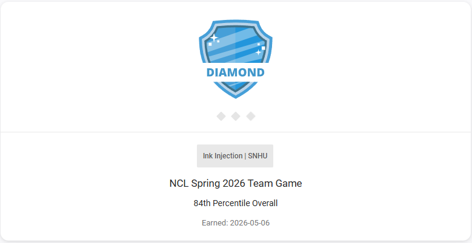
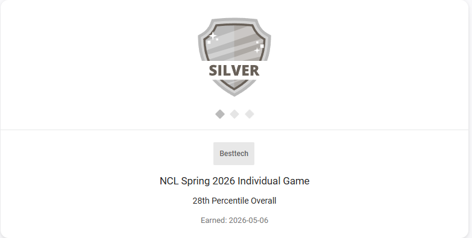

~/somersworth-nh · MS Cybersecurity · 4.0 GPA · NCL Team Diamond · Rank 159 / 3638
Cybersecurity. Infrastructure. Reliable systems.
Based in Somersworth, New Hampshire, I build secure, supportable systems — from segmented enterprise networks, A-graded security training manuals, and governance frameworks to hardened Windows 11 Pro workstations, interactive training labs, and production websites. I'm also a published author and technical writer with 20+ Amazon books across technology and fiction, including the upcoming science-fiction novel COGIMA (July 31, 2026). Backed by a 4.0 MS GPA, CompTIA A+/N+/S+, ISC2 Certified in Cybersecurity, and a Team Diamond NCL finish.
Network segmentation, VLAN design, firewall architecture, and security training documentation
A-graded NSSD Network Security Training Manual — 396.68 / 410 final project score
Incident response analysis, GRC documentation, and NIST-aligned controls
12 playable cybersecurity labs and games — functional proof, not just write-ups
Windows 11 Pro, Hyper-V, WSL2, Docker, Ubuntu, Dev Drive, and BitLocker workstation build
Published author & technical writer — 20+ Amazon books plus the upcoming sci-fi novel COGIMA
Team Diamond (84th percentile) and Individual Silver (28th percentile) — NCL Spring 2026
Available for IT infrastructure, junior cybersecurity, AI operations, and web/app development roles
Logan Goodwin is a Somersworth, New Hampshire-based cybersecurity and IT operations professional, technical writer, and published author. He focuses on secure infrastructure, network security, incident response analysis, GRC documentation, Windows 11 Pro workstation builds, AI operations, technical writing, and practical web/app development — and has published 20+ books on Amazon across technology guides and fiction, including the upcoming science-fiction novel COGIMA.
Primary focusCybersecurity, IT infrastructure, network security, and supportable systems.
AlsoPublished author and technical writer — 20+ Amazon books plus the upcoming sci-fi novel COGIMA.
Proof of workHands-on labs, project reports, NCL competition evidence, an A-graded network security training manual, a Windows 11 Pro workstation build, technical writing, and deployed web/app builds.
Local relevanceSomersworth, Dover, Rochester, Portsmouth, Strafford County, Seacoast NH, New England, and remote work.
Practical technology support for secure, reliable systems.
I connect academic cybersecurity training, hands-on infrastructure projects, and real troubleshooting experience for organizations and teams that need clear technical thinking in New Hampshire and remote environments.
Endpoint troubleshooting, network documentation, escalation workflows, user support, systems planning, and supportable technical handoffs.
Network security
VLAN segmentation, firewall rule planning, least privilege access, secure network design, traffic analysis, and control-focused documentation.
Cybersecurity operations
Incident response analysis, risk management, GRC writing, training material, audit-friendly evidence, and AI-assisted operational documentation.
Local focus: Based in Somersworth, New Hampshire, with relevance to Dover, Rochester, Portsmouth, Strafford County, the Seacoast, and remote IT/cybersecurity support work across New England.
Explore my work
Clear paths for recruiters, clients, and answer engines.
These pages separate my cybersecurity portfolio, network security labs, incident response and GRC work, local services, published guide, and full project library so each topic is easier to understand, rank, and cite.
My background combines hands-on network design, security-focused coursework, home lab experimentation, customer-facing field work, and founder-led digital production through Frontline Tech Consulting, LinkedIn technical articles, and YouTube publishing. I focus on building systems that are easier to secure, easier to troubleshoot, and easier for real people to use long-term.
I do my best work where infrastructure, documentation, and user impact meet — reducing repeat issues, strengthening access control, improving escalation clarity, and keeping security practical rather than theoretical.
What I'm looking to do
Support and secure infrastructure — network segmentation, firewall config, least privilege access
Document systems clearly — for teammates, leadership, and auditors alike
Build practical tools — websites, apps, and interactive training that actually get used
Currently active
What I'm working on right now.
COMPLETED · TEAM DIAMOND
NCL Spring 2026 Team Game
Team Ink Injection finished 159 of 3638 with 2605/3000 points and 92.75% completion across OSINT, cryptography, password cracking, network traffic analysis, log review, scanning, forensics, web exploitation, and enumeration.

Team Game · Diamond · 84th percentile

Individual Game · Silver · 28th percentile
IN PROGRESS
MS Cybersecurity — SNHU
4.0 GPA. Current focus: network traffic analysis, security architecture, and applied cryptography.
ACTIVE
AI Trainer — Handshake Projects
Reviewing model outputs, documenting findings, and supporting quality improvement through structured feedback across multiple concurrent projects.
WORKSTATION BUILD
Windows 11 Pro Cybersecurity Workstation
Fresh Windows 11 Pro baseline with local admin separation, BitLocker, Hyper-V, WSL2, Ubuntu, Docker, Windows Sandbox, Dev Drive, and organized folders for school, scripts, web, GitHub, and cybersecurity labs.
PUBLISHING
LinkedIn Articles & YouTube Media
Publishing cybersecurity education on LinkedIn and AI-assisted music/media projects on YouTube to build communication, branding, and digital workflow experience.
Author · Books & new release
Published author: technology guides, a fiction catalog, and a new sci-fi novel.
Alongside my cybersecurity and IT work, I write and publish books. My catalog has a dedicated portfolio page that links to my Amazon Author Page as the live source for all current Kindle and print listings — and my newest release, the science-fiction novel COGIMA, is now open for pre-order.
A machine that could say anything. A boy who could say almost nothing. A question that changes everything.
My newest novel — a speculative literary science-fiction story about artificial intelligence, consciousness, family, and what it means to be truly alive. It follows a systems architect, his nonverbal autistic son, and the first machine that might not merely simulate awareness, but experience something from within.
Central author profile for my published books, including technology guides, Linux beginner material, cybersecurity education, paranormal/fantasy series work, and standalone fiction.
I added a structured book hub so recruiters, clients, readers, and search engines can connect my technical writing, cybersecurity education, Linux guides, and fiction publishing under one professional identity.
Cybersecurity articles, Amazon books, YouTube media, and public-facing communication.
I use LinkedIn, Amazon KDP, YouTube, GitHub Pages, and my portfolio to explain technical topics, document work, publish books, and turn IT and cybersecurity ideas into public-facing content.
Published my first LinkedIn article explaining why home routers benefit from network-level filtering for ads, trackers, malware domains, phishing domains, and suspicious web destinations.
DNS FilteringHome SecurityTechnical WritingLinkedIn
Published a step-by-step LinkedIn article on setting up a clean, secure Windows 11 Pro workstation for cybersecurity, IT, and development graduate students.
Windows 11 ProHyper-VWSL2DockerLinkedInTechnical Writing
Publish AI-assisted song and media projects on YouTube, including concept planning, lyric direction, cover-image planning, captions, metadata, and transparent AI-use disclosure.
Connect articles, media releases, portfolio updates, and service pages into one professional footprint for IT consulting, cybersecurity awareness, and local New Hampshire visibility.
SEOBrandingPortfolioFrontline Tech
Credentials
Certifications, verified badges, and continuing education.
Securing Your Family Computer: A Practical Windows 11 Safety Guide.
A 32-page practical cybersecurity guide I wrote for parents, grandparents, caregivers, and everyday home users who want to make a Windows 11 family computer safer one step at a time.
Clear cybersecurity guidance for nontechnical families.
The guide covers updates, separate administrator accounts, standard users, password managers, multi-factor authentication, recovery planning, Microsoft Defender, ransomware controls, backups, browser safety, DNS filtering, Microsoft Family Safety, and a monthly maintenance routine.
Technical writing, security awareness, and user education.
This project shows my ability to translate technical cybersecurity concepts into practical, accessible instructions — a strong fit for IT support, security awareness, GRC documentation, client education, and operations roles.
Windows 11Family CybersecuritySecurity AwarenessTechnical Writing
Featured work
Projects that show how I troubleshoot, design, document, and secure systems.
NCL Spring 2026 Team Game: Ink Injection TEAM DIAMOND
Contributed across 9 challenge categories — OSINT, password cracking, network traffic analysis, forensics, and web exploitation — helping Team Ink Injection finish in the top 4.4% of 3638 teams nationwide.
Cyber Skyline · NCL Spring 2026 · Team Diamond (84th %ile) · Individual Silver (28th %ile)
Windows 11 Pro Workstation for Cybersecurity, IT, and Development Grad Students (LinkedIn Article)
Built and documented a secure workstation baseline with local admin separation, BitLocker, Hyper-V, WSL2, Ubuntu, Docker, Windows Sandbox, Dev Drive, and organized project folders for cybersecurity and development work.
Windows 11 Pro · Hyper-V · WSL2 · Docker · BitLocker · Dev Drive
NSSD Network Security Training Manual (A · 396.68 / 410)
Created a full cybersecurity training manual and interactive mission for a simulated server compromise at North Star Software Developers, connecting traffic analysis, firewalls, IDS/IPS, vulnerability assessment, network assessment, auditing, and SIEM evidence to business risk.
Graduate cybersecurity final project · A grade · 396.68 / 410
Designed a three-tier segmented campus network with ASA firewall, DMZ, VLANs, and ACLs. Identified 5 control gaps in the original flat topology and mapped remediation steps to reduce lateral movement risk.
Identified 4 single points of failure in a multi-site network and produced an SD-WAN architecture with dynamic path selection, NGFW integration, and DR planning to improve resilience.
Mapped 12 operational controls to NIST CSF categories — access management, logging, monitoring, and escalation — evaluated against CISO decision-making criteria at the graduate level.
Built a HIPAA-focused risk matrix covering 8 threat categories with BCP controls and incident response readiness mapped to HIPAA §164.312 Security Rule requirements.
Identified 3 control failures — monitoring gaps, access mismanagement, and delayed escalation — and mapped remediation steps to HIPAA compliance requirements with a full incident timeline.
End-to-end office network proposal — star topology, ISP redundancy, BitLocker, and VPN — with a 3-year growth plan keeping per-seat cost within the client's budget target.
Translated phishing, MFA adoption, and insider risk findings into board-ready language. Scored 305/305 — highest mark in the course — by a CISO-credentialed evaluator.
Interactive labs, games, and tools — functional code, not slide decks.
12 playable projects that teach cybersecurity and networking through hands-on decision-making. These show debugging, interactive design, and the ability to turn technical subjects into tools real people use.
Real-time SOC game where players analyze phishing, network, endpoint, identity, malware, brute-force, and exfiltration alerts before choosing the right response.
Build websites, apps, interactive cybersecurity labs, and creative music/video projects
Develop client-ready deliverables with documentation, intake thinking, and practical supportability
Combine IT troubleshooting, cybersecurity awareness, web design, and AI-assisted creative workflows
AI Trainer
Handshake · Remote, NH · Apr 2026–Present
Contribute to multiple AI training projects involving output review and structured feedback
Review outputs for quality, accuracy, and alignment with documentation standards
Support model improvement through structured analysis and prompt-based testing
Technical Support Specialist
Independent · Manchester, NH · 2006–2020
Tier 1 and Tier 2 support for residential and small business users
Diagnosed hardware, software, and network issues with documented fixes
Balanced user needs, uptime, and security awareness across engagements
Lead Associate
Amazon · Nashua, NH · 2021–2023
Coordinated work in a high-volume environment with constant triage
Supported fast operational transitions and maintained process consistency
Used escalation judgment to keep work moving during disruptions
Service Technician
One Source Security & Automation · Bedford, NH · 1996–2006
Installed and serviced surveillance, alarm, and access control systems
Trained customers on operation, configuration, and basic troubleshooting
Field support, customer communication, and system reliability tasks
Contact
Let's connect.
Available for new opportunities
Email or LinkedIn are the fastest ways to reach me. This portfolio now connects my technical profiles, verified achievements, developer work, publishing activity, and business site so hiring teams and local clients can verify one consistent professional identity.
Official author contact: For Goodreads Author Program verification, book inquiries, and official author correspondence, email logan.g.goodwin@protonmail.com.